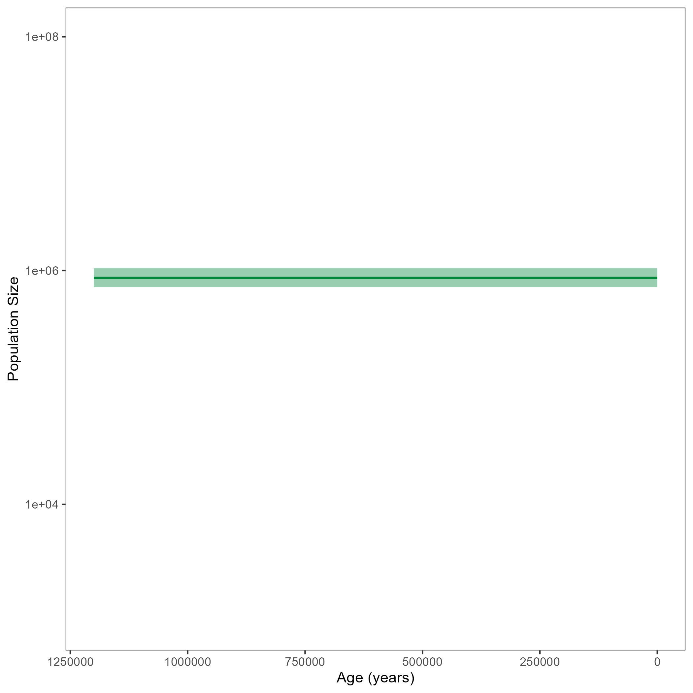

This tutorial describes how to run a coalescent analyses with heterochronous data in RevBayes.
For the description of the whole script, we will focus on an analysis with a constant population size.
At the bottom of the page, you can find links to RevBayes scripts performing more complex analyses.
Theses scripts are similar to the ones described for isochronous data.
If you have already done the tutorial for a constant coalescent model with isochronous data, most parts will be the same. Please specifically have a look at the section and at the root calibration part of the section .
For your info
The entire process of the estimation can be executed by using the mcmc_heterochronous_constant.Rev script that you can download on the left side of the page. Save it in your scripts directory. You can type the following command into
RevBayes:source("scripts/mcmc_heterochronous_constant.Rev")We will walk you through every single step in the following section.
For every MCMC analysis, convergence assessment is an important step.
In the tutorial Convergence assessment, you can find information and instructions on how to run the convergence assessment with the R package convenience.
It is generally recommended to have at least two replicates per MCMC analysis to be able to compare convergence between runs.
Thus, we first set the number of replicates:
NUM_REPLICATES = 2
In the beginning, we also define a few variables for running the MCMC. These are the number of iterations, and the so-called “thinning” which we use to say that we want to sample every $10^{th}$ iteration.
NUM_MCMC_ITERATIONS = 10000
THINNING = 10
We also need to create vectors for the monitors and moves of the MCMC. Moves are functions that propose new parameter values in your MCMC, based on the current value. These newly proposed parameters can either be accepted or rejected. Depending on this acceptance / rejection, the posterior distribution of your parameters will be formed. See for example Introduction to MCMC for more information on the acceptance / rejection procedure. Monitors are later used to track the progress of your analysis, but are also needed to write output files.
moves = VectorMoves()
monitors = VectorMonitors()
Start by reading in the ages and the aligned sequences of the heterochronous horse data.
taxa <- readTaxonData("data/horses_heterochronous_ages.tsv")
sequences <- readDiscreteCharacterData("data/horses_heterochronous_sequences.fasta")
You will also need the number of taxa.
n_taxa <- taxa.size()
For the constant coalescent model, only one population size is estimated. For this population size, a prior needs to be set. Without knowing much about the population size of our horse sample, we set a uniform prior.
pop_size ~ dnUniform(0,1E8)
You may realize that in the full script, we initialize the population size to have a first value of $100000$. Later in the tutorial, we will constrain the root age of the tree to be inside the interval $[780 000, 1 200 000]$. In order for our first proposed tree to comply with this constraint, an initial value of $100000$ proved to lead to reasonable initial proposals.
pop_size.setValue(100000)
We also add a move for the population size. Here, we chose a scaling move which means that the current values is multiplied by a scaling factor to propose a new value. See for example Introduction to MCMC using RevBayes for information on moves.
moves.append( mvScale(pop_size, lambda=0.1, tune=true, weight=2.0) )
Now, we will instantiate the stochastic node for the tree.
The dnCoalescent distribution should be used for a constant coalescent process.
It takes a value for the population size (theta) and the taxa as input.
psi ~ dnCoalescent(theta=pop_size, taxa=taxa)
We calibrate the tree based on the root age. We chose a Normal distribution with a mean of $850 000$ and a standard deviation of $200 000$. As mentioned above, the root age will be constrained to the interval $[780 000, 1 200 000]$. As we have access to the original analysis from Vershinina et al. (2021), we could see that this should be the rough range of the root.
root_age := psi.rootAge()
diff <- (1200000 - 780000)/2.0
obs_root_age ~ dnNormal(mean = root_age, sd = 200000, min = root_age - diff, max = root_age + diff)
obs_root_age.clamp(850000)
We should also add moves for the tree.
These include moves on a single branch, subtrees or the whole tree.
Here, the weight of the different moves is based on the number of taxa.
If a move changes a single branch (e.g. mvNNI), it will be applied more often and thus have a higher weight than a move which changes the whole tree (e.g. mvTreeScale).
moves.append( mvNarrow(psi, weight=n_taxa) )
moves.append( mvNNI(psi, weight=n_taxa) )
moves.append( mvFNPR(psi, weight=n_taxa/4.0) )
moves.append( mvSubtreeScale(psi, weight=n_taxa/5.0) )
moves.append( mvNodeTimeSlideUniform(psi, weight=n_taxa) )
moves.append( mvRootTimeScaleBactrian(psi, weight=n_taxa/5.0) )
moves.append( mvTreeScale(psi, weight=n_taxa/5.0) )
Finally, sequence data should be added to the analysis. Here, we assume a GTR+$\Gamma$+I substitution model, but you can of course use others. Have a look at the Nucleotide substitution models tutorial to see how you can define different substitution models.
For the GTR model, we need to add exchangeability rates (er) and stationary frequences (pi).
Of course, we also add moves for these.
er_prior <- v(1,1,1,1,1,1)
pi_prior <- v(1,1,1,1)
er ~ dnDirichlet(er_prior)
pi ~ dnDirichlet(pi_prior)
moves.append( mvBetaSimplex(er, weight=3) )
moves.append( mvDirichletSimplex(er, weight=1) )
moves.append( mvBetaSimplex(pi, weight=2) )
moves.append( mvDirichletSimplex(pi, weight=1) )
This is everything needed for the Q matrix of the GTR model.
Q := fnGTR(er,pi)
For the $\Gamma$ extension to the GTR model, we need to draw the site rates (sr) from a discretized Gamma function with two parameters.
Here, we use alpha for both parameters.
We also add a scaling move for alpha.
alpha ~ dnUniform( 0.0, 1E6 )
alpha.setValue( 1.0 )
sr := fnDiscretizeGamma( alpha, alpha, 4 )
moves.append( mvScale(alpha, weight=2.0) )
We draw the proportion of invariant sites (p_inv) from a Beta distribution and add a sliding window move.
p_inv ~ dnBeta(1,1)
moves.append( mvSlide(p_inv) )
The last step is to set the clock rate. We draw it from a log uniform distribution here. Again, we know from the original analysis (Vershinina et al. 2021) that the true value should be around $4.68*10^{-8}$ and thus set the lower bound of the distribution to $1*10^{-12}$ and the upper bound to $1*10^{-4}$. We also initialize the value to be equal to the original analysis. Then, we add a scaling move for the clock rate.
clock ~ dnLoguniform(1e-12,1e-4)
clock.setValue(4.68e-8)
moves.append( mvScale(clock, weight=2.0) )
Additionally, we add a scaling move which makes sure to regulate clock rate and the root age. This needs to be done as root age and clock rate are intertwined and can not be clearly seperated. Here, whenever the clock rate will be increased, the root age will be decreased. Note that you could also calibrate the clock rate instead of the root age of the tree as we do it here.
up_down_move = mvUpDownScale(weight=5.0)
up_down_move.addVariable(clock,up=TRUE)
up_down_move.addVariable(psi,up=FALSE)
moves.append( up_down_move)
The final dnPhyloCTMC function combines all of the previous defined parameters.
We also need to clamp the sequence data.
seq ~ dnPhyloCTMC(tree=psi, Q=Q, siteRates=sr, pInv=p_inv, type="DNA", branchRates=clock)
seq.clamp(sequences)
In the end, we need to wrap our model.
mymodel = model(psi)
Now, we add some monitors.
The mnModel monitor keeps track of all model parameters and thus is written into our main .log file.
With mnFile, you can keep track of the trees or parameters that you would like to keep in an extra file.
mnScreen is responsible for having output printed directly to your screen.
This output will not per se be saved in a file.
monitors.append( mnModel(filename="output/horses_constant.log",printgen=THINNING) )
monitors.append( mnFile(filename="output/horses_constant.trees",psi,printgen=THINNING) )
monitors.append( mnFile(filename="output/horses_constant_NE.log",pop_size,printgen=THINNING) )
monitors.append( mnScreen(pop_size, root_age, printgen=100) )
The final step is to run the mcmc.
Make sure to set combine="mixed" for the output of the two replicates to be combined in the end.
mymcmc = mcmc(mymodel, monitors, moves, nruns=NUM_REPLICATES, combine="mixed")
mymcmc.burnin(NUM_MCMC_ITERATIONS*0.1,100)
mymcmc.run(NUM_MCMC_ITERATIONS, tuning = 100)
To check whether your analysis has converged, you can use the R package convenience.
Have a look at the Convergence assessment tutorial.
Add convergence results here
After running your analysis, you can plot the results using the R package RevGadgets.
See the RevGadgets Github repository for information on how to install the package.
After installing the package, open R or RStudio and set the tutorial directory as your working directory.
You can plot the RevBayes output as follows:
library(RevGadgets)
burnin = 0.1
probs = c(0.025, 0.975)
summary = "median"
num_grid_points = 500
max_age_het = 1.2e6
population_size_log = "output/horses_het_constant_NE.log"
df <- processPopSizes(population_size_log, burnin = burnin, probs = probs, summary = summary, num_grid_points = num_grid_points, max_age = max_age_het)
p <- plotPopSizes(df) + ggplot2::coord_cartesian(ylim = c(1e3, 1e8))
ggplot2::ggsave("horses_het_constant.png", p)
Your output should look roughly like the following figure.

Here, you can find scripts for analyses similar to those performed in the previous tutorials for isochronous data.
The main changing points are the data which is read in and the root age.
The root age also has an influence on parameters like MAX_AGE, which is needed, e.g, for the Gaussian Markov Random Field (GMRF) scripts and the ESTIMATED_ROOT_AGE parameter, which you can find for example in the skyride script.